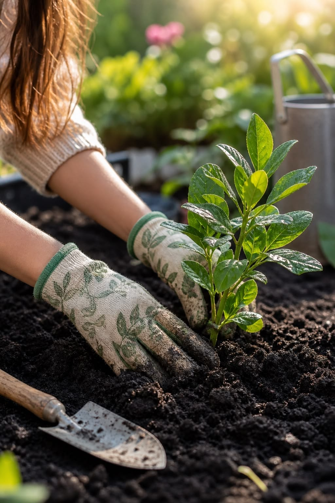

Регулярний, але помірний полив, розпушування ґрунту та мульчування допомагають утримувати вологу біля кореневої системи й стримувати ріст бур'янів. Навесні та на початку літа рослини добре реагують на легке підживлення.

Своєчасне видалення зів'ялих суцвіть підтримує охайний вигляд клумби та стимулює подальший розвиток рослин. Восени багаторічники готують до зимівлі, враховуючи вимоги конкретного виду.